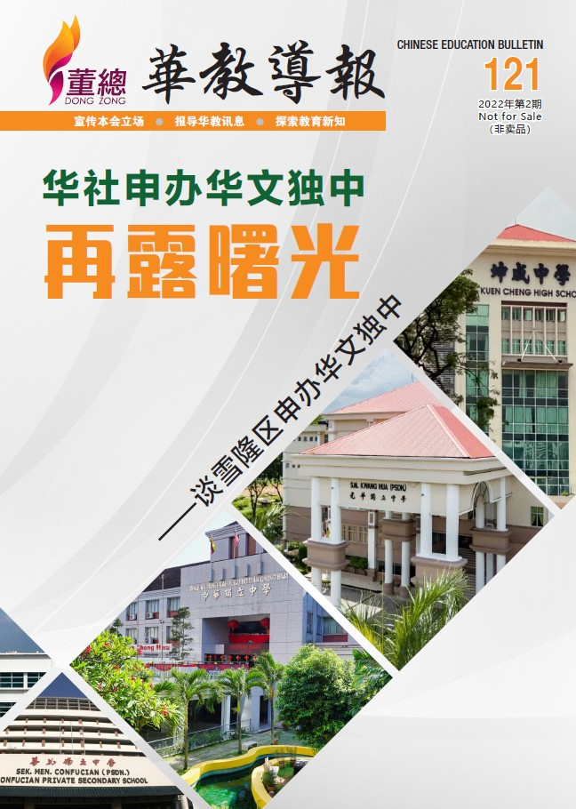

编者语

随着2022年4月1日马来西亚国门大开，不少国外游客陆续前来观光旅游，加上防疫标准作业程序（SOP）的松绑，生活可算是逐步恢复到疫情来袭前的情景。学校陆续恢复面授课堂，线上活动也渐渐恢复实体模式进行。本会近几个月相应亦进行了一些实体拜访与交流的活动，如：中国驻马特命全权大使欧阳玉靖莅访董教总、董总与华总交流联谊晚会、董总代表团拜访中文媒体高层等。
今年2月雪州大臣阿米鲁丁宣布将在雪兰莪州增建一所华文独中，面对这项突如其来的好消息，确实让华社各界雀跃不已，争取华文独中的增建再现曙光。雪隆区常年面对学生爆满问题，许多学子因为学校空间不允许而入学无门，导致他们无法顺利进入华文独中求学。若雪兰莪州成功增建一所华文独中，既可以解决学生爆满的问题，也可以让更多学子有机会接受华文独中教育。
本期延续上期特别策划的内容，在这期刊登马来西亚华文小学发展概况（下篇）。本期华教人物的主角为陈玉康局绅，让读者了解这位敢怒敢言的华教前辈，热心于华文教育的故事。其他精彩内容包括：“第18届中国高等教育展”、“彰师大数理创意教学硕士班开课礼”、“华文独中高中理科实验评量试行简报”、“2021年全国华文独中和关丹中华中学教师基本资料统计”等。
董总华教综合大厦原定的筹款目标为3,000万令吉，在新冠疫情和经济受冲击下，导致物价上涨和建筑成本提升，致使募款目标增至4,200万令吉。目前，已筹获3,059万令吉，欢迎各界人士踊跃捐献，支持筹建董总华教综合大厦。